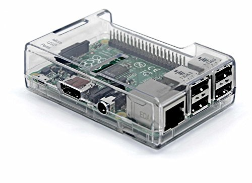
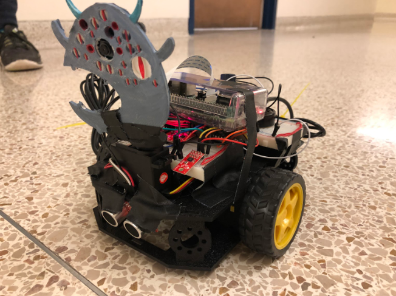

Honestly we knew we would need a camera mount once we attached our Raspberry Pi V2 camera to the RPi 3. It was not a rigid connection due to how flimsy the cord was. We also wanted to mount it on a servo so it could be actuated independently of the pose of the robot, so only turning in degrees that do not over-exted the cord to the point of tear. Therefore the mount needed to be small enough to mount it on the servo without loss of rotation, but strong enough to maintain enough rigidity to hold the camera where we want it to be angled.
When using both the RPi and the mbed then you can not let the pieces touch because they would surely short out and cause the whole circuit to be fried. We ended up purchasing a small RPi case that came with predesigned holes to enable connections, but also contained holes to let heat escape. Originally we thought to mount the entire RPi case on top of the servo, but it was not actuating as fast as possible and it wasn't balanced well on the small servo head. We instead defaulted to just mounting the monster head which doubles as our camera mount on the servo and attaching the remainder of the case onto the top of the robot. The RPi case is shown below.
Additionally for the entire body of the robot including the servos and breadboards for the robot we used the shadow chassis that was packaged with the kit. The assembly of this chassis caused us to put the external battery on the top, since it could fit inside of it given the placement of the servos. Here are a list of our components and the finish product is pictured below.
Here are our components:
If you would like you can check out our mbed notebook site here.